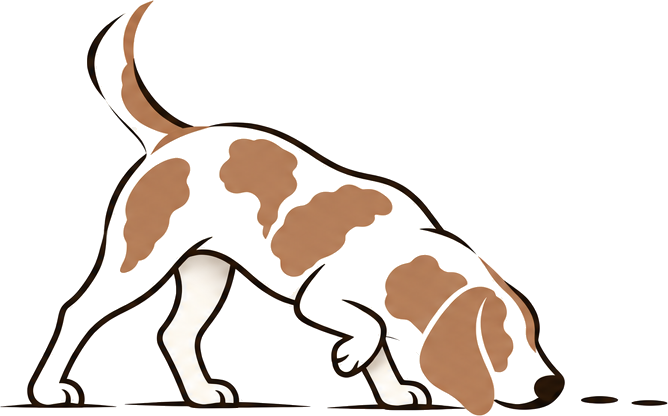
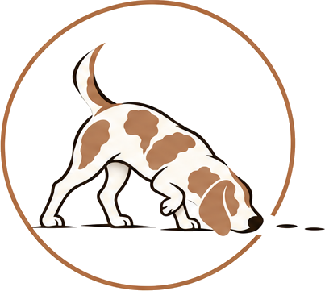

Advisory for what's next

The beagle is a scent hound. It works with its nose to the ground, follows the trail to the end and finds what others walk past. That is the promise of Doogan & Co: careful, persistent work that turns up what matters for the next decision.
Use the primary lockup above wherever there is room. Use the versions below when space is tight or the background is dark.

Below about 120 px wide the beagle's detail is lost. Use this "D" with the copper dot for browser tabs and app icons.
Colours are taken directly from the logo artwork. Ink carries the words, copper is the accent, and cream is the beagle's coat and the warm background.
#191917 · 25 25 23Wordmark, headings, body text#AE6D43 · 174 109 67The dot, badge ring, accents#B47D57 · 180 125 87Illustration only#73665D · 115 102 93Tagline, captions, labels#FDF9F2 · 253 249 242Backgrounds, reversed textCopper on white passes the 4.5:1 contrast check for large text only, so keep body text in Ink or Taupe.
ABCDEFGHIJKLMNOPQRSTUVWXYZ & 0123456789
The closest free match to the wordmark's lettering. Use it for headings and names.
ABCDEFGHIJKLMNOPQRSTUVWXYZ & 0123456789
A clean geometric sans that matches the tagline. Use it for body text, and in capitals with wide spacing for labels.
Keep a clear margin around any logo at least as tall as the "O" in Doogan.
Primary lockup at least 40 mm wide in print and 240 px on screen. Wordmark at least 25 mm or 140 px.
On Ink or photography, switch to the cream wordmark. The copper dot stays copper.
The tan, cream and ink are fixed. Scale the artwork evenly from a corner.
Its outline disappears. Use the badge on a cream panel instead.
The round copper dot is the brand's signature detail in every version.
Shown at the Australian standard card size of 90 × 55 mm.